Project set-up¶
Creating a new Unreal project¶
Create a blank project, with the “Starter Content” selected.
In your Content Browser panel, open the default minimal level (located in StarterContent/Maps).
Once loaded, save this level under your root folder as a different name (File -> Save as…).
You have now a basic level with some testing elements (a ground, some lights…).
Importing a character in UE4¶
For details about how characters works in Unreal, please see the Unreal official documentation
Import your FBX file:
Create a new folder to store all your character elements (mesh, skeleton, etc).
In your content browser, click on Import and enter the path to your .fbx character, or directly drag’n’drop the .fbx file in your content browser. The FBX import dialog should appear.
Do not forget to check the Import Morph Targets and Import Meshes in Bone Hierarchy options. They will be targeted by the Dynamixyz Live Link Plugin for the character animation.
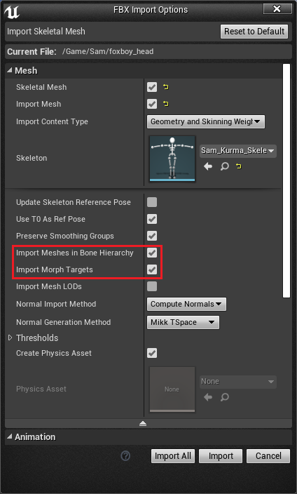
After the import, a Mesh asset and a Skeleton asset should appear.
Tip
Importing Morph Targets (blendshapes) may be a very long process.
Use T0As Ref Pose option might be useful if the head of your bones is not well placed on the scene after import.
Warning
It is important to give your blendshapes unique names. Grouping them under different group names or putting them into different meshes may not be enough. The absolute name of the blendshape has to be unique, as Unreal will merge every group of blendshapes. For example : forehead[shape1] and chin[shape1] will create a conflict and the two morph targets will be merged under the name “shape1” in Unreal, leading to a possibly invalid shape. Renaming them into forehead[f_shape1] and chin[c_shape1] will work.
Checking imported Blendshapes and Bones names¶
Open the Mesh asset. On the Morph target Preview panel, all blendshapes should be listed
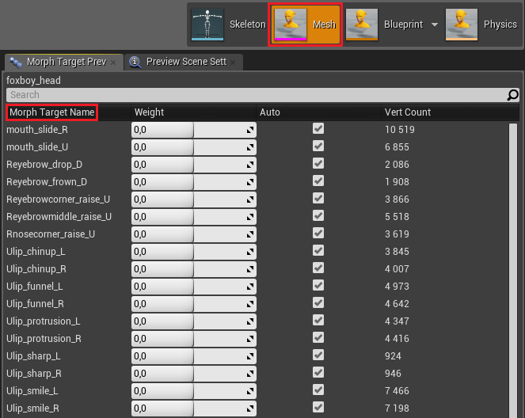
Hint
If this list is empty, it is because you did not imported your blendshapes. To import them, expand Import Settings in the Mesh detail panel and check Import Morph Targets. Commit your changes clicking on Reimport Mesh. Be patient, this process takes time.
Open the Skeleton asset. You should see the bone hierarchy of you character.
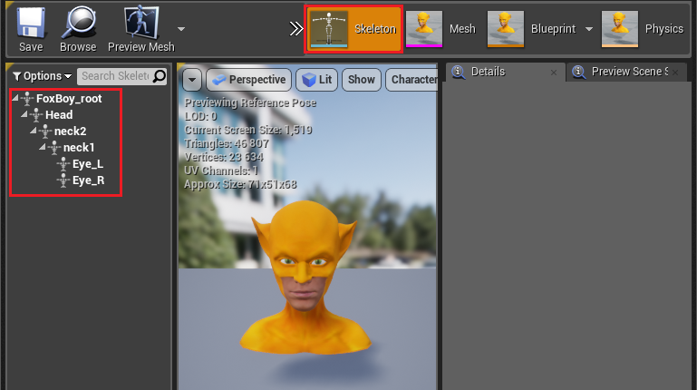
Warning
If your rig was created with Maya, make sure to reset to zero all the Joint Orients before you export it. The next section explains how to do it. Bad Joint Orients lead to wrong coordinate systems in Unreal for each bone and consequently to a broken animation.
Clean a rig containing bad bone rotations in Maya (optional)¶
If your rig contains weird local rotations when you import it in Unreal, it may be because of wrong Joint Orientations. Here is one way to clean your rig.
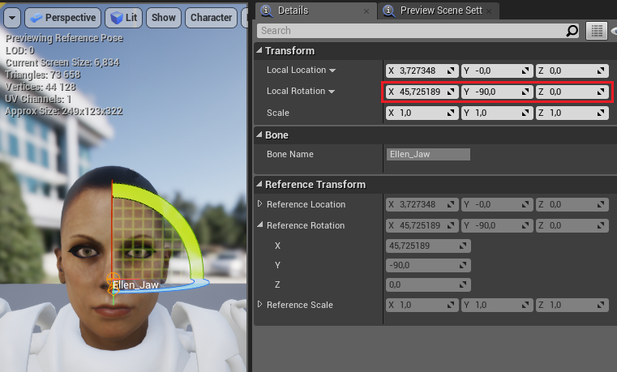
Open your FBX in Maya. Select a bone and go to the Attribute Editor to check its Joint Orient. The Joint Orient has to be (0, 0, 0) to be compatible with the plugin.
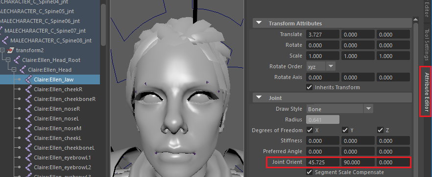
If your rig contains bones with non-null Joint Orient values, follow this procedure.
Step 1 : Dettach the skin¶
To correct the bones orientations, all the skins have to be detached.
Before starting, select the Rigging Menu in the dropdown list on the top-left corner of Maya.
For every skinned mesh :
Select the mesh in the Outliner and go to Skin -> Export weight maps. Chose the path and validate if a pop-up appears.
Select again the mesh and go to Skin -> Unbind skin.
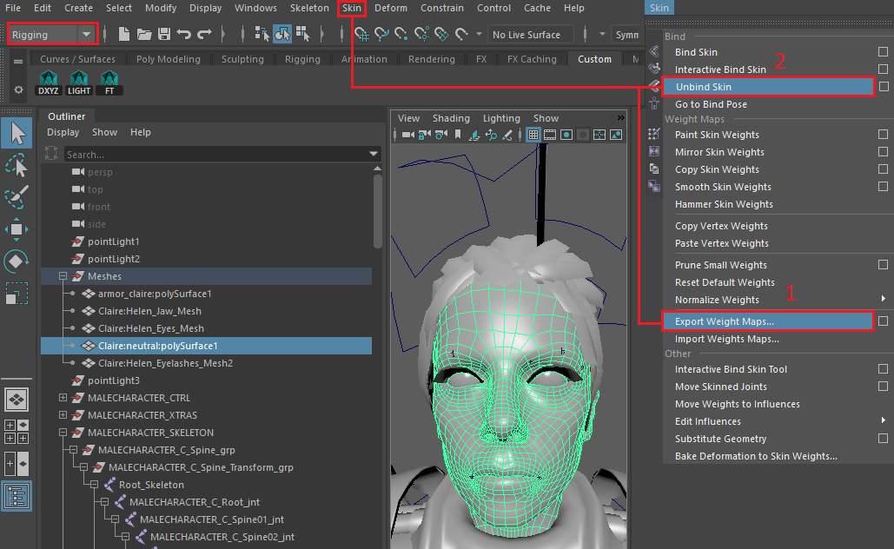
To see all the skinned meshes, select the root of your skeleton and go to Shading -> Wireframe on Shaded. They should appear in a pink color.
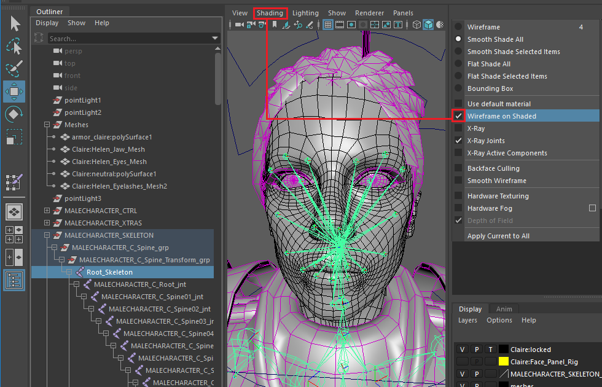
Step 2 : Reset Joint Orients¶
To display the skeleton only, go to Show -> None then again Show -> Joints.
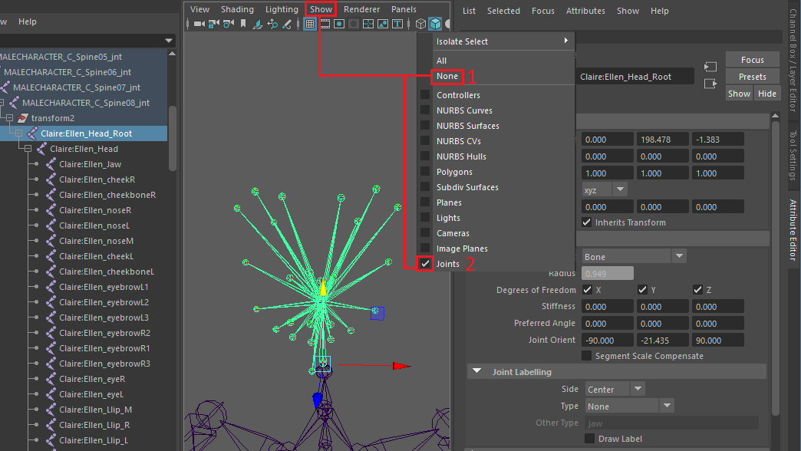
For every bone that needs a modification :
Select the bone
Copy/Paste the Joint Orient values in the Rotate field (Transform Attributes). The bone will update in the scene with a new orientation.
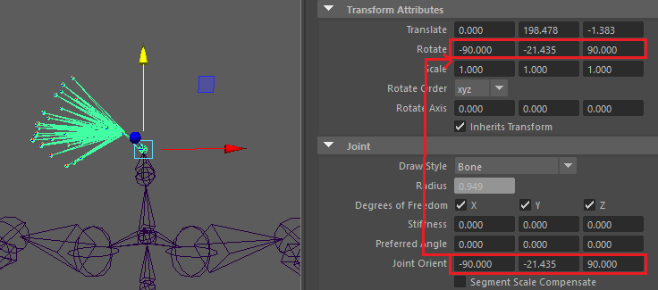
Set the Joint Orient values to (0, 0, 0). The bone will get back to its right orientation.
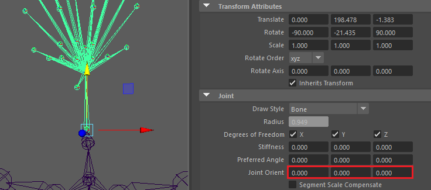
Right-clik on the Joint Orient attribute and select Lock Attribute.
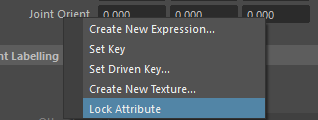
Go to Modify -> Freeze Transformations. You should see the Rotate values reset to zero without the bone changing its orientation.
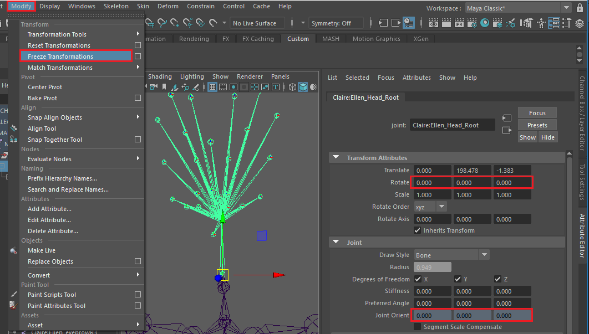
Step 3 : Re-attach the skin¶
For every mesh you want to attach to the rig :
Select both the mesh and the root of your skeleton and go to Skin -> Bind skin
Select the mesh again and go to Skin -> Import weight maps, then select the map you exported in step 1 for this mesh.
Once that all the skins are bound, you can move a joint to check your skinning.
Warning
If your rig contains blendshapes, you may need to delete history by going in the Edit menu and selecting Delete By Type -> Non-deformer history to avoid problems with morph targets.
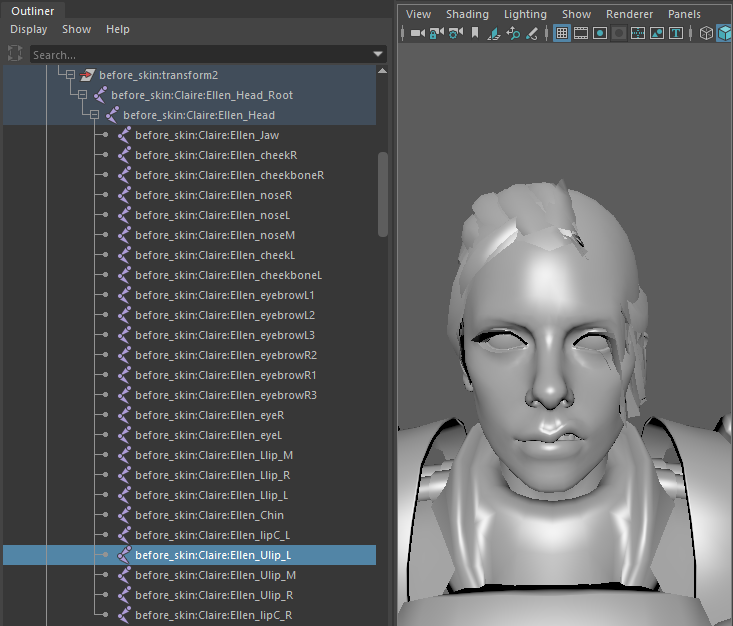
Import your cleaned rig in Unreal and open the skeleton asset. The local rotations of your bones should now be (0, 0, 0).
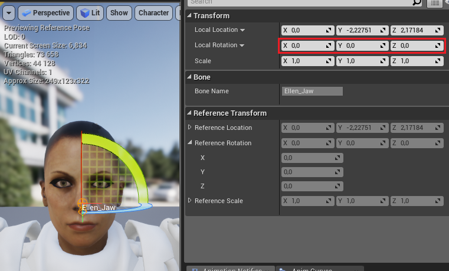
Create a new Character Blueprint (optional)¶
Click on in the content browser panel and create a new Blueprint Class. Select Character Blueprint.
Open this new Blueprint and go to the Viewport tab.
Note
If you don’t see the Viewport tab, and you have only a list of properties, a message on the top is inviting you to open the Full Blueprint Editor.
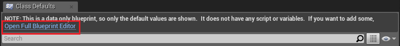Select the Mesh component in the Components panel.
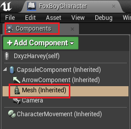On the Detail panel, for Skeletal Mesh, select your character Mesh.
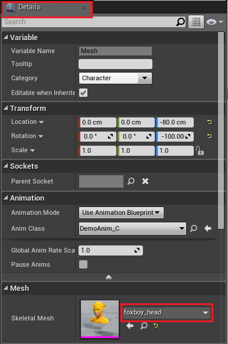
Tip
In order to see the face of the character, you can add a camera in the Viewport of your character.
Now, you can jump to the next section for animating your character with the Dynamixyz Live Link Plugin.